| Name | Image | Rarity | Type | Cost | Description |
|---|
| Static Buildup | 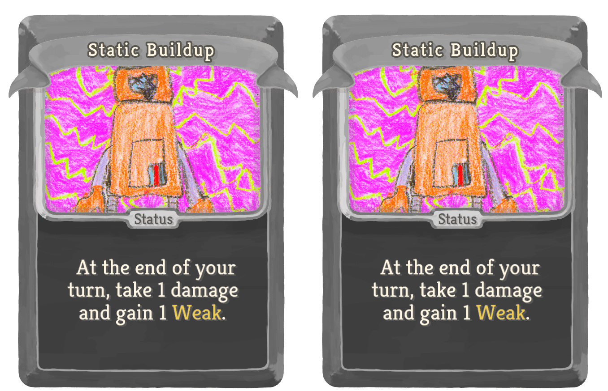 | Common | Status | | At the end of your turn, take 1 damage and gain 1 Weak. |
| Static Buildup | | Common | Status | | At the end of your turn, take 1 damage and gain 1 Weak. |
| Static Buildup | | Common | Status | | At the end of your turn, take 1 damage and gain 1 Weak. |
| Static Buildup | | Common | Status | | At the end of your turn, take 1 damage and gain 1 Weak. |
| Static Buildup | | Common | Status | | At the end of your turn, take 1 damage and gain 1 Weak. |
| Static Buildup | | Common | Status | | At the end of your turn, take 1 damage and gain 1 Weak. |
| Static Buildup | | Common | Status | | At the end of your turn, take 1 damage and gain 1 Weak. |
| Static Buildup | | Common | Status | | At the end of your turn, take 1 damage and gain 1 Weak. |
| Static Buildup | | Common | Status | | At the end of your turn, take 1 damage and gain 1 Weak. |
| Static Buildup | | Common | Status | | At the end of your turn, take 1 damage and gain 1 Weak. |
| Defend |  | Basic | Skill | 1 | Gain 5 (8) Block. |
| Lucky Find | 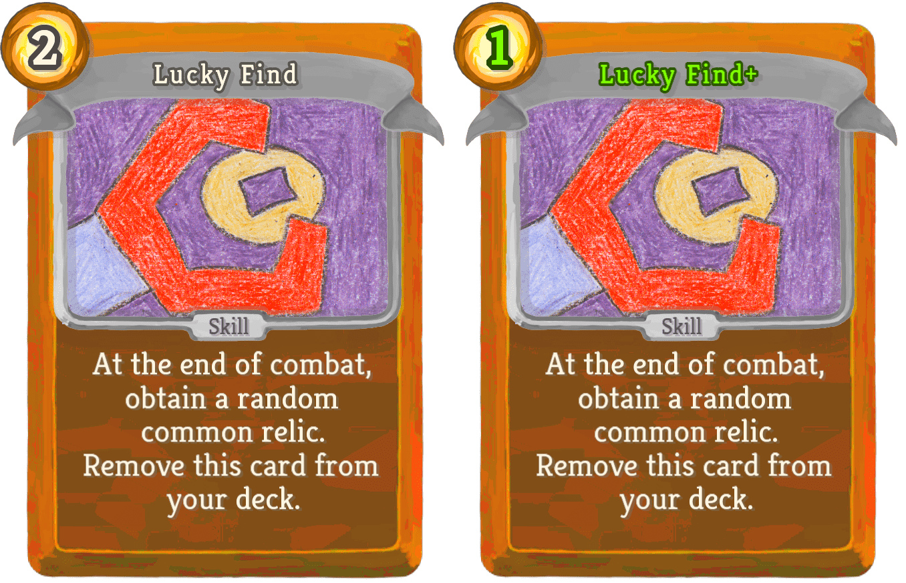 | Basic | Skill | 2 (1) | At the end of combat, obtain a random common relic. Remove this card from your deck. |
| Mini Lasers | 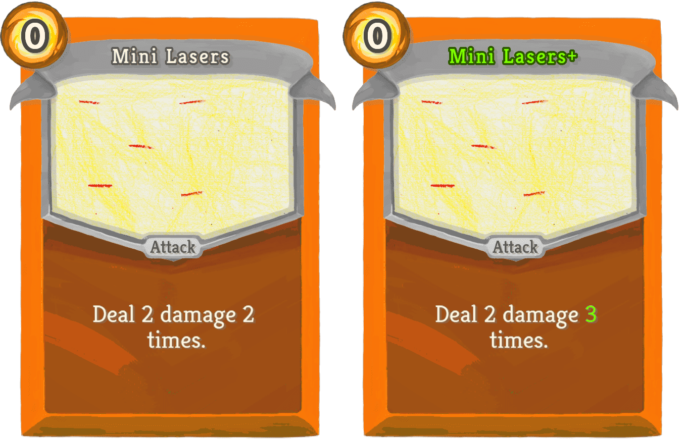 | Basic | Attack | 0 | Deal 2 damage 2 (3) times. |
| Scan |  | Basic | Skill | 1 | Gain 7 (10) Block. robotspaceexplorer:Salvage 1. |
| Strike |  | Basic | Attack | 1 | Deal 6 (9) damage. |
| Aftershock | 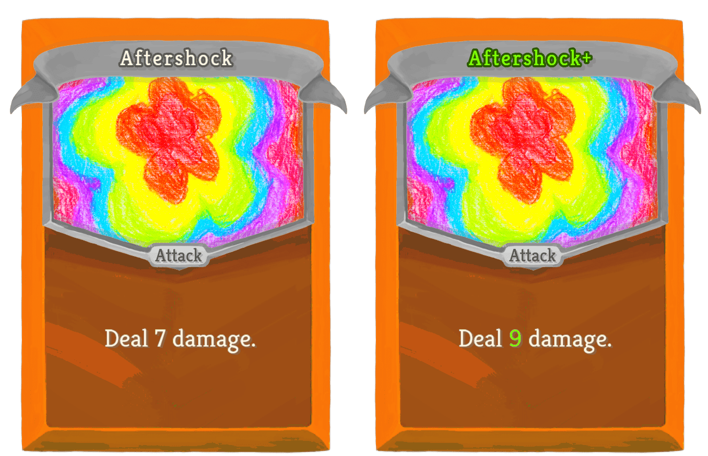 | Special | Attack | | Deal 7 (9) damage. |
| Ammunition | 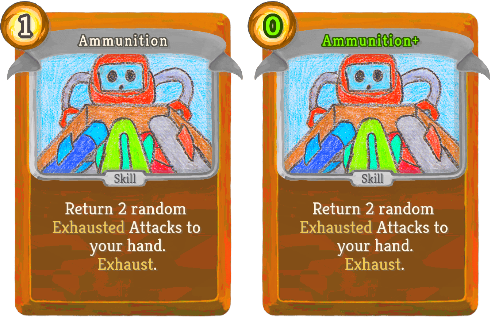 | Common | Skill | 1 (0) | Return 2 random Exhausted Attacks to your hand. Exhaust. |
| Counterblock |  | Common | Skill | 1 | Gain 7 (9) Block. Draw 1 (2) card(s) next turn. |
| Frantic Search |  | Common | Skill | 1 | robotspaceexplorer:Salvage 2. Draw 1 (2) card(s). |
| Frost Missile |  | Common | Attack | 2 | Deal 12 (15) damage. Apply 2 (3) Weak. Exhaust. |
| Glue Shot | 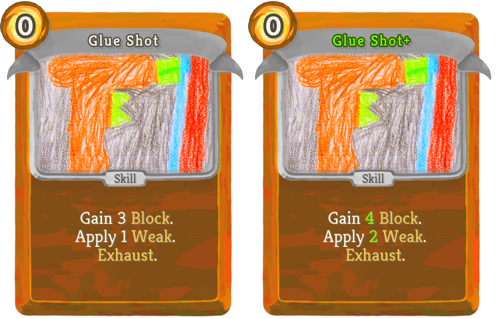 | Common | Skill | 0 | Gain 3 (4) Block. Apply 1 (2) Weak. Exhaust. |
| Improvised Attack | 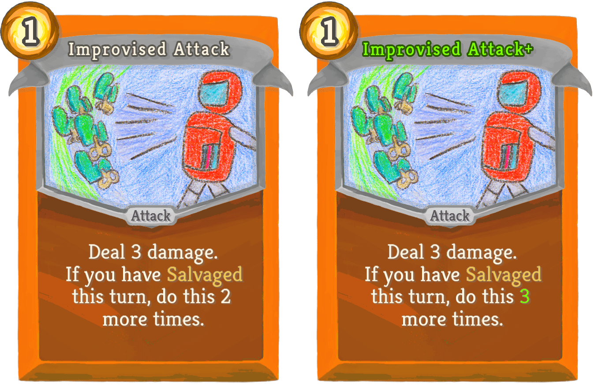 | Common | Attack | 1 | Deal 3 damage. If you have robotspaceexplorer:Salvaged this turn, do this 2 (3) more times. |
| Metal Strike | 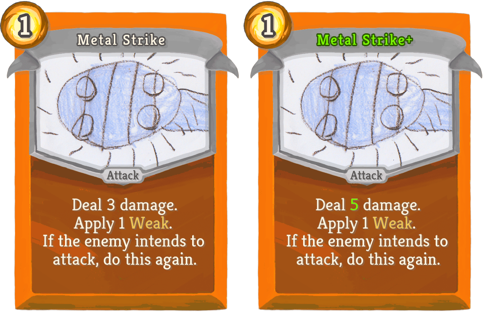 | Common | Attack | 1 | Deal 3 (5) damage. Apply 1 Weak. If the enemy intends to attack, do this again. |
| Mini Drones |  | Common | Attack | 0 | Deal 2 (3) damage to ALL enemies. Gain 3 (5) block. |
| Probe |  | Common | Attack | 0 | Deal 2 (5) damage. Next turn, robotspaceexplorer:Salvage 1. |
| Pulsar |  | Common | Skill | 1 | Gain 7 (9) Block. Gain 1 (2) robotspaceexplorer:Solar_Flare. |
| Scrap Missile | 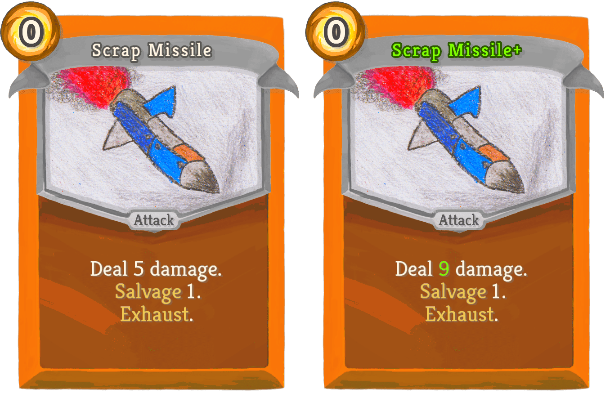 | Common | Attack | 0 | Deal 5 (9) damage. robotspaceexplorer:Salvage 1. Exhaust. |
| Shock Kick | 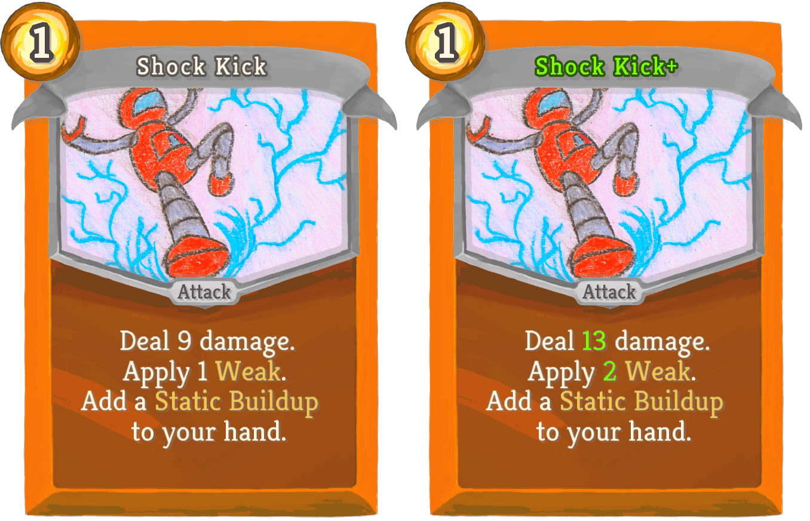 | Common | Attack | 1 | Deal 9 (13) damage. Apply 1 (2) Weak. Add a Static Buildup to your hand. |
| Shovel Strike | 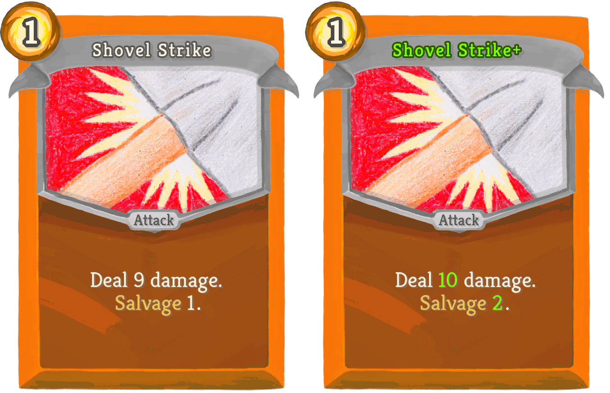 | Common | Attack | 1 | Deal 9 (10) damage. robotspaceexplorer:Salvage 1 (2). |
| Slime Missile | 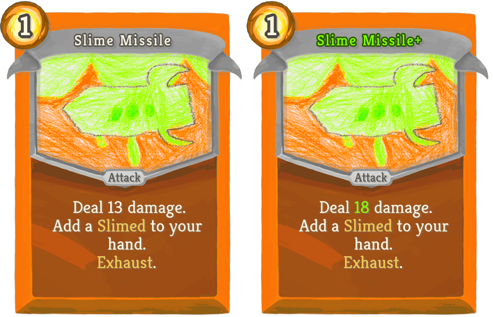 | Common | Attack | 1 | Deal 13 (18) damage. Add a Slimed to your hand. Exhaust. |
| Stun Grenade | 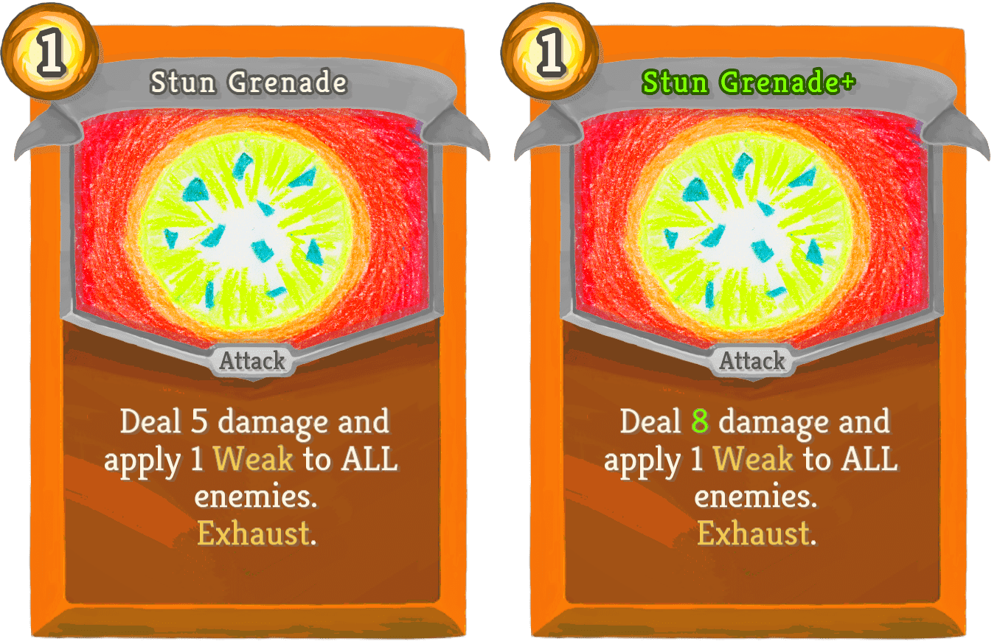 | Common | Attack | 1 | Deal 5 (8) damage and apply 1 Weak to ALL enemies. Exhaust. |
| Surging Shield |  | Common | Skill | 1 | Gain 7 (10) Block. Gain robotspaceexplorer:Surge 2. |
| Surging Strike |  | Common | Attack | 1 | Deal 7 (10) damage. Gain robotspaceexplorer:Surge 2. |
| Swift Step |  | Common | Skill | 1 | Whenever you play a card this turn, gain 2 Block.(robotspaceexplorer:Salvage 1.) |
| Big Missile |  | Uncommon | Attack | 2 | Remove all Block (and Artifact) from the enemy. Deal 15 (20) damage. Exhaust. |
| Blitz | 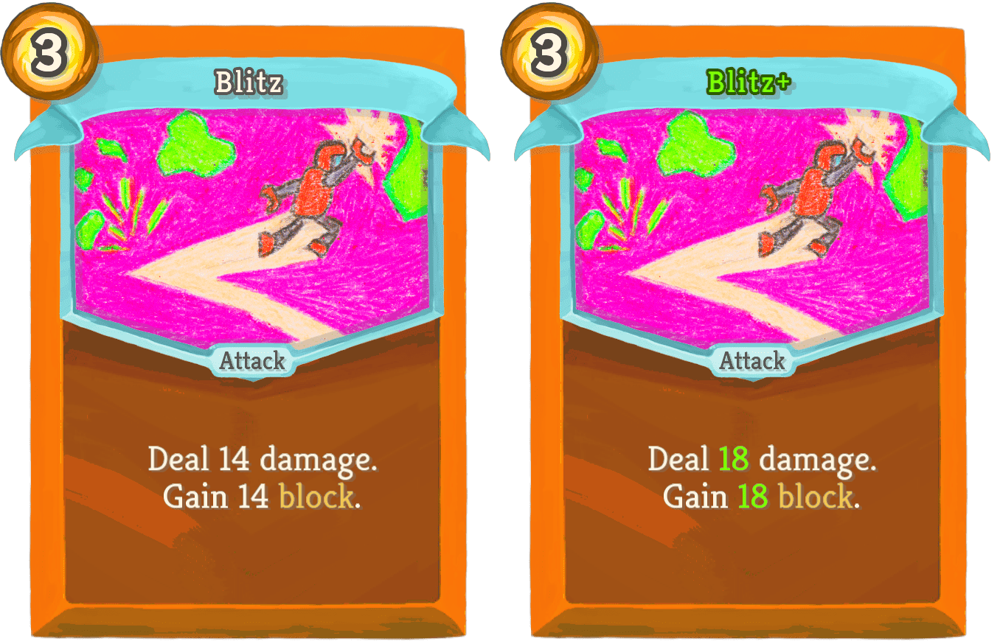 | Uncommon | Attack | 3 | Deal 14 (18) damage. Gain 14 (18) block. |
| Calculate | 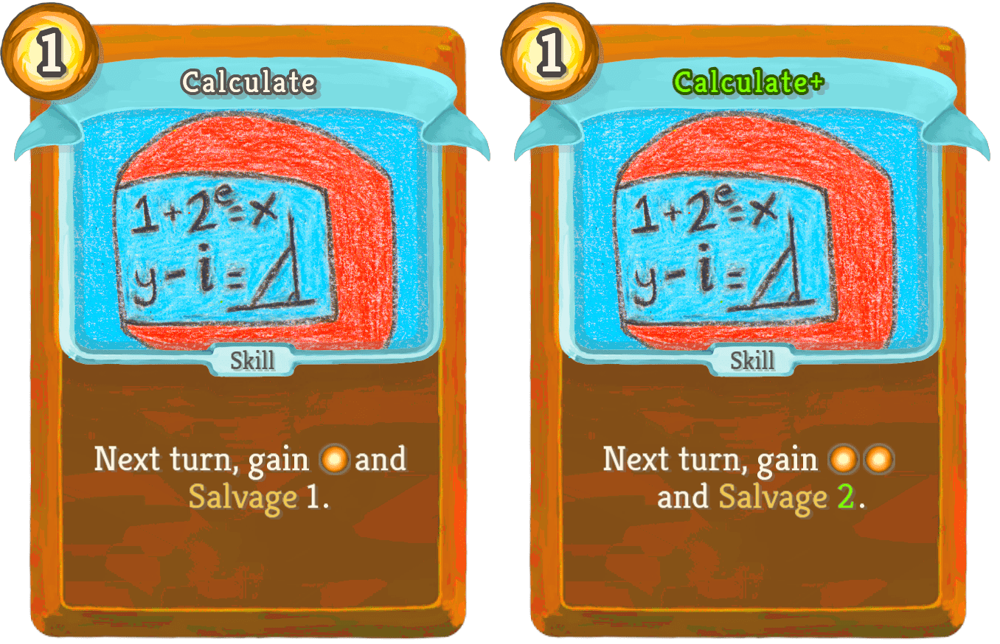 | Uncommon | Skill | 1 | Next turn, gain [E] ([E]) and robotspaceexplorer:Salvage 1 (2). |
| Discharger | 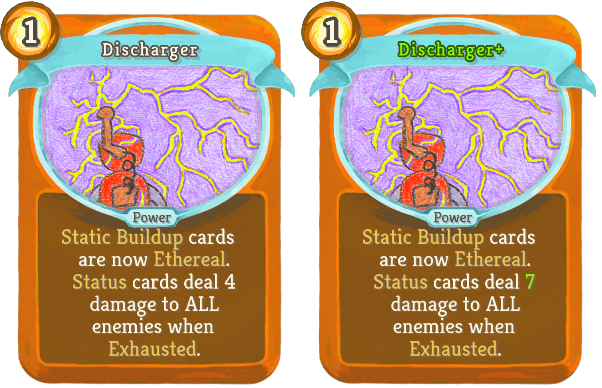 | Uncommon | Power | 1 | *Static Buildup cards are now Ethereal. Status cards deal 4 (7) damage to ALL enemies when Exhausted. |
| Double Block |  | Uncommon | Skill | 2 | Gain 9 (13) Block. Next turn, gain 9 (13) Block. |
| Double Find | 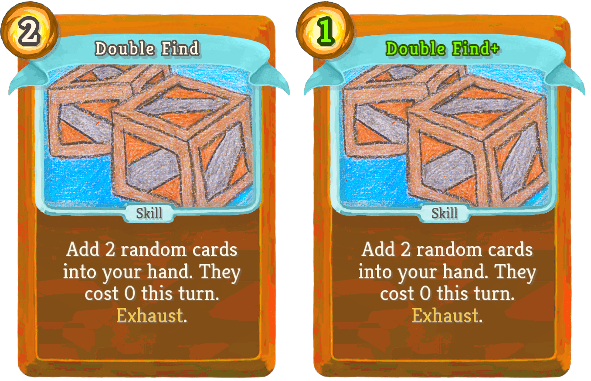 | Uncommon | Skill | 2 (1) | Add 2 random cards into your hand. They cost 0 this turn. Exhaust. |
| Dual Core |  | Uncommon | Power | 1 | Every time you play 5 cards in a single turn, gain 3 (5) Vigor and 3 (5) Block. |
| Electropulse | 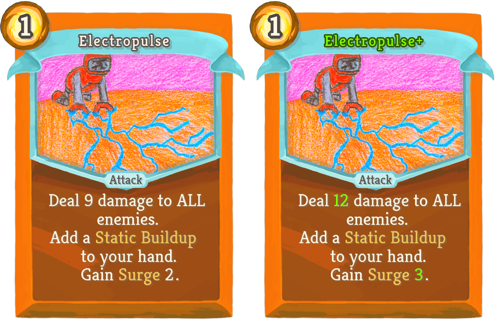 | Uncommon | Attack | 1 | Deal 9 (12) damage to ALL enemies. Add a Static Buildup to your hand. Gain robotspaceexplorer:Surge 2 (3). |
| Electroshield |  | Uncommon | Skill | 1 | Gain 14 (19) Block. Add a Static Buildup to your hand. |
| Exhaust Fan |  | Uncommon | Power | 1 | Lose 2 Dexterity. Gain 2 (3) Block whenever you play an attack. |
| Fix |  | Uncommon | Skill | 1 | Gain 1 (2) Artifact. Heal 4 (6) HP. Exhaust. |
| Freeze Ray | 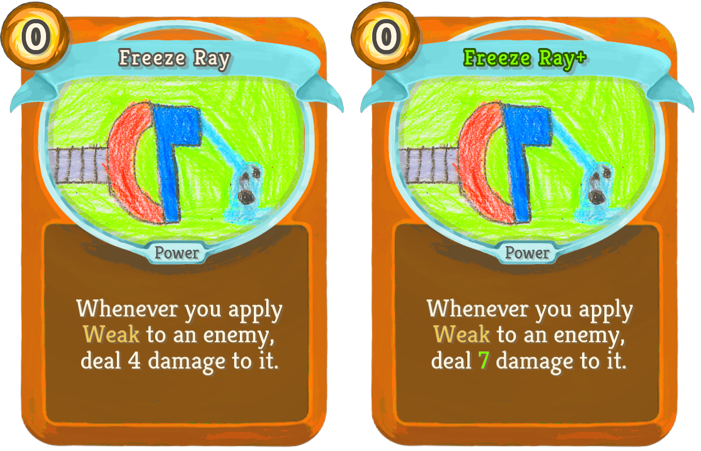 | Uncommon | Power | 0 | Whenever you apply Weak to an enemy, deal 4 (7) damage to it. |
| Freezing Shield |  | Uncommon | Skill | 1 | Gain 6 (9) Block. Enemy loses 1 (2) Strength this turn. |
| Gear Shield |  | Uncommon | Skill | 1 | Gain 8 (12) Block. Gain 1 Artifact. Exhaust. |
| Glue Spray | 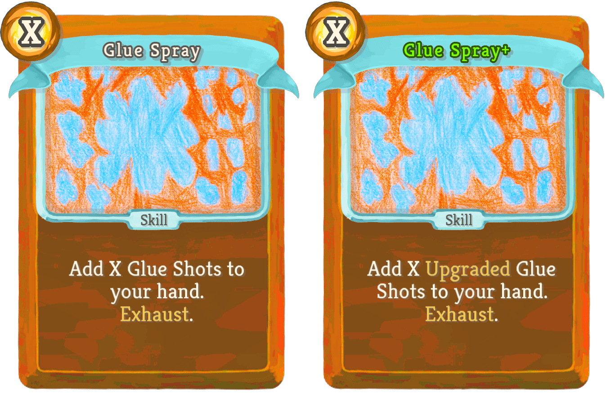 | Uncommon | Skill | X | Add X (Upgraded) Glue Shots to your hand. Exhaust. |
| Iron Shell | 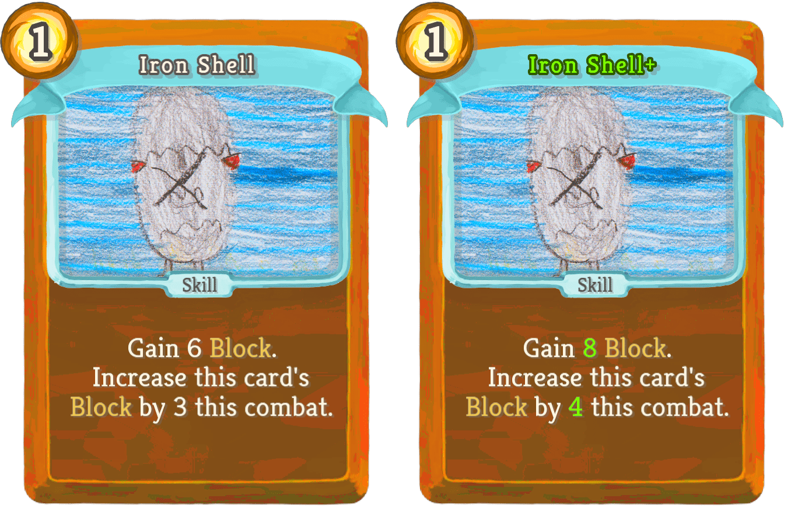 | Uncommon | Skill | 1 | Gain 6 (8) Block. Increase this card's Block by 3 (4) this combat. |
| Jetpack | 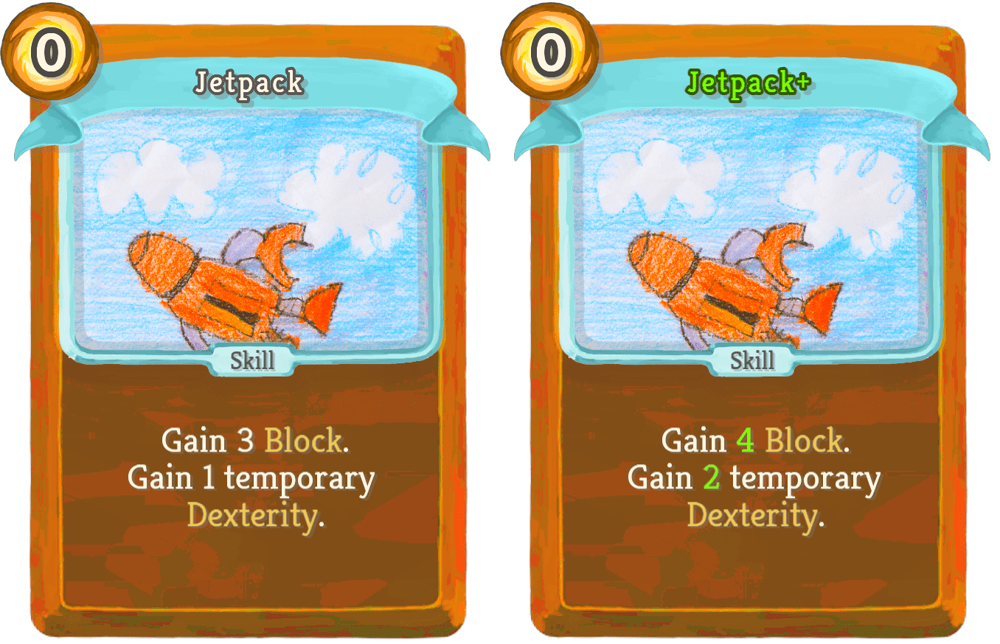 | Uncommon | Skill | 0 | Gain 3 (4) Block. Gain 1 (2) temporary Dexterity. |
| Junk Dive |  | Uncommon | Skill | 0 | robotspaceexplorer:Salvage 3 (4). Exhaust. |
| Laser Burst |  | Uncommon | Attack | 2 | Deal 3 damage to a random enemy 4 (6) times. |
| Lucky Strike |  | Uncommon | Attack | 0 | Deal 5 (8) damage. Whenever you robotspaceexplorer:Salvage, if this is in your draw pile, play it. |
| Makeshift Volley |  | Uncommon | Attack | 2 (1) | Discard your hand. Deal 5 damage to a random enemy for each card discarded. |
| MiniBoosters | 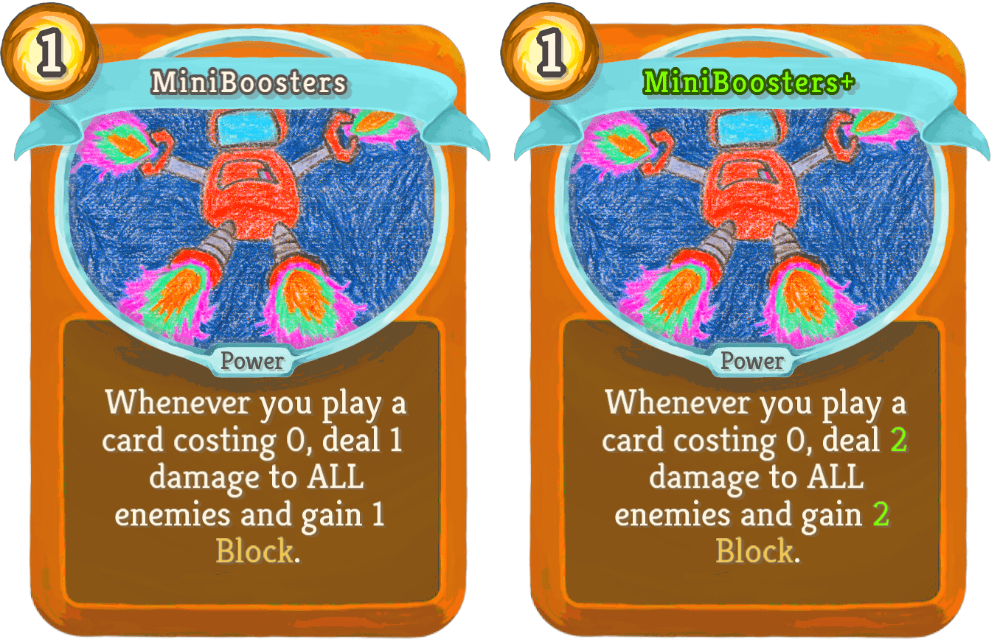 | Uncommon | Power | 1 | Whenever you play a card costing 0, deal 1 (2) damage to ALL enemies and gain 1 (2) Block. |
| Plasma Missile | 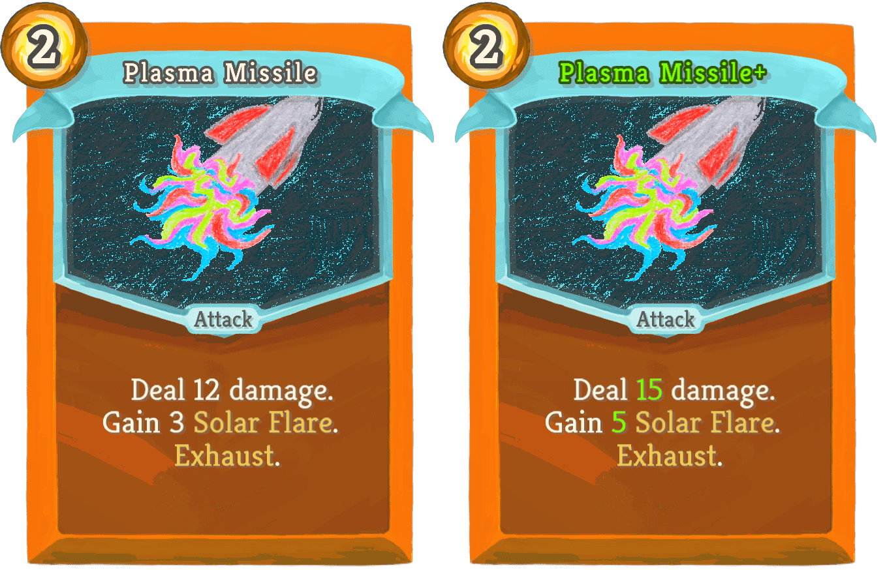 | Uncommon | Attack | 2 | Deal 12 (15) damage. Gain 3 (5) robotspaceexplorer:Solar_Flare. Exhaust. |
| Power Collector | 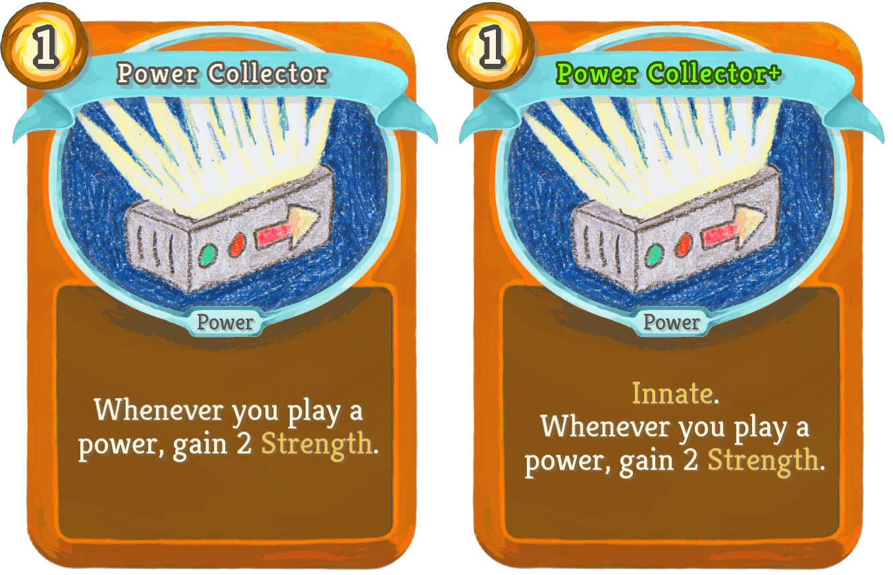 | Uncommon | Power | 1 | (Innate.)Whenever you play a power, gain 2 Strength. |
| Power Glove | 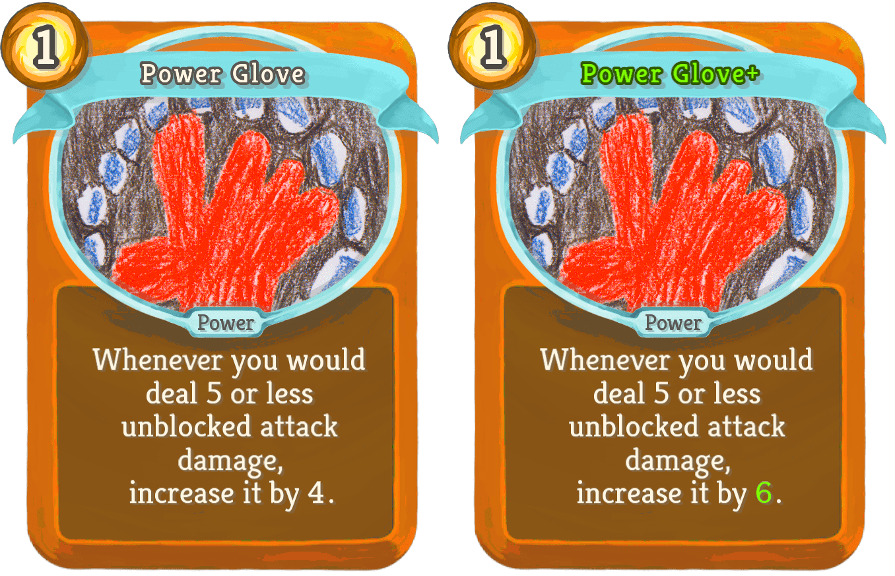 | Uncommon | Power | 1 | Whenever you would deal 5 or less unblocked attack damage, increase it by 4 (6). |
| Reload |  | Uncommon | Skill | 1 | Play a random (Choose and play an) Attack from your Exhaust pile. |
| Rig Explosive | 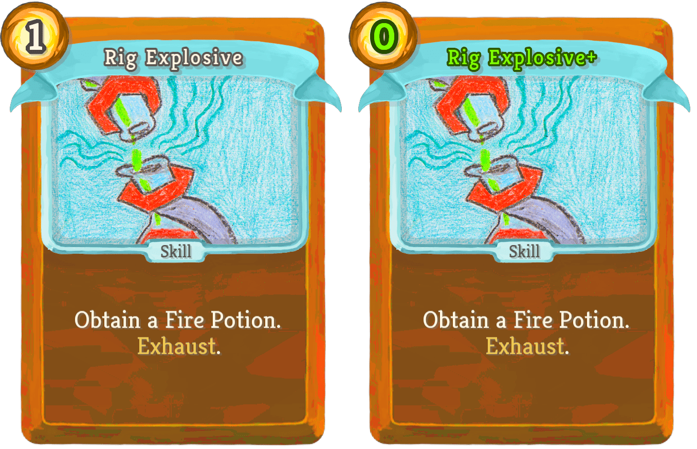 | Uncommon | Skill | 1 (0) | Obtain a Fire Potion. Exhaust. |
| Scrap Shield | 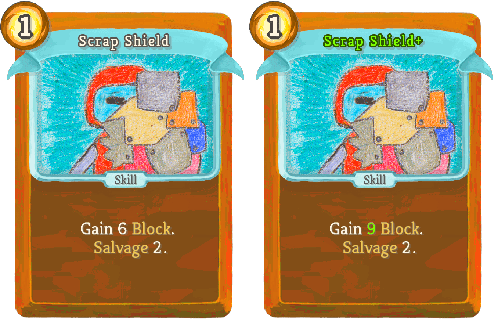 | Uncommon | Skill | 1 | Gain 6 (9) Block. robotspaceexplorer:Salvage 2. |
| Scrap Toss | 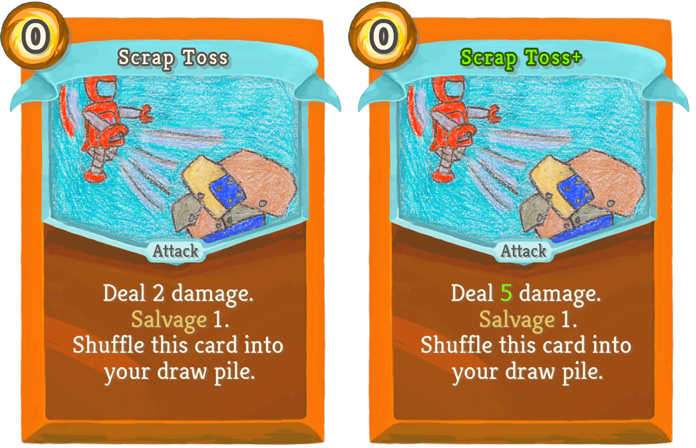 | Uncommon | Attack | 0 | Deal 2 (5) damage. robotspaceexplorer:Salvage 1. Shuffle this card into your draw pile. |
| Self-Cleaning | 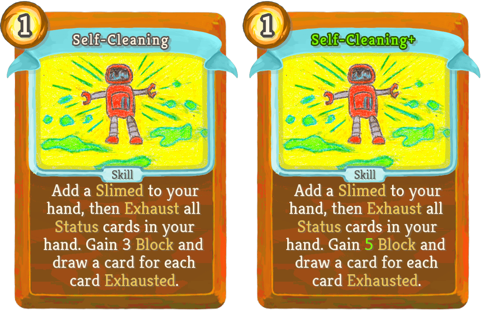 | Uncommon | Skill | 1 | Add a Slimed to your hand, then Exhaust all Status cards in your hand. Gain 3 (5) Block and draw a card for each card Exhausted. |
| Smokescreen | 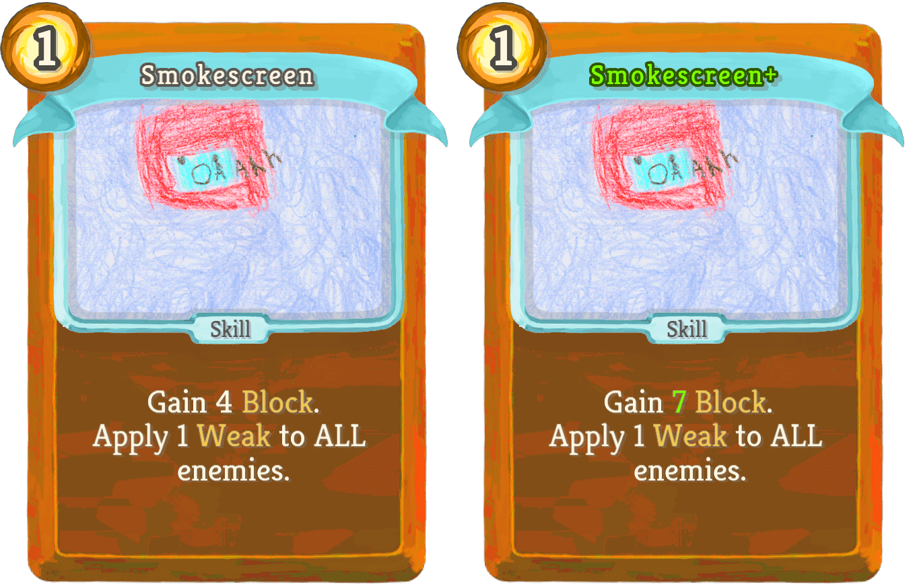 | Uncommon | Skill | 1 | Gain 4 (7) Block. Apply 1 Weak to ALL enemies. |
| Star Dust |  | Uncommon | Power | 2 | At the start of each turn, gain 1 less [E] and gain 5 (8) robotspaceexplorer:Solar_Flare. |
| Star Lightning |  | Uncommon | Attack | 1 | Deal 5 (7) damage. Gain 5 (7) block. Gain 2 (3) robotspaceexplorer:Solar_Flare. |
| Toxic Bomb |  | Uncommon | Skill | 2 | Apply 1 (2) Weak to ALL enemies. After 2 turns, deal 14 (18) damage to ALL enemies. |
| Turbo Dodge |  | Uncommon | Skill | 2 | Gain 12 (15) Block. Next turn, gain [E] ([E]). |
| Accelerator |  | Rare | Power | 3 (2) | The first time you play a card costing 0 each turn, draw 1 card and gain [E]. |
| Arsenal | 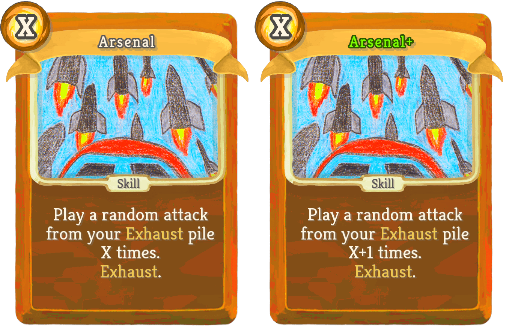 | Rare | Skill | X | Play a random attack from your Exhaust pile X (X+1) times. Exhaust. |
| Asteroid | 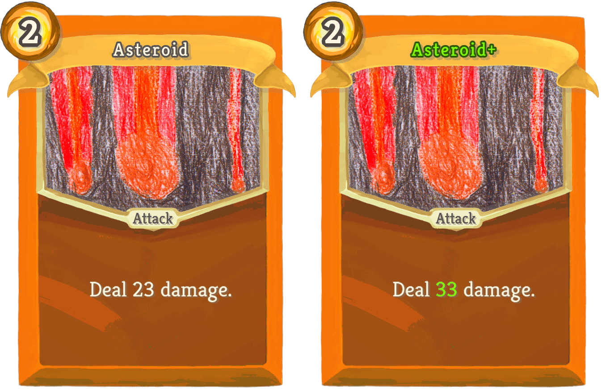 | Rare | Attack | 2 | Deal 23 (33) damage. |
| Autoloader | 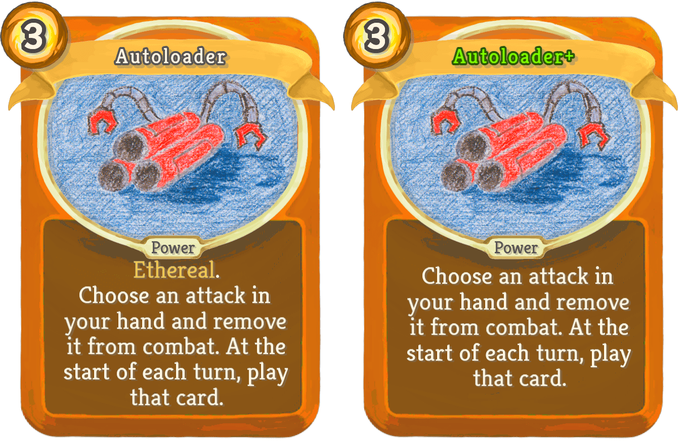 | Rare | Power | 3 | Ethereal. (not Ethereal.) Choose an attack in your hand and remove it from combat. At the start of each turn, play that card. |
| Blast Shield |  | Rare | Skill | 3 (2) | Gain Block equal to the amount an enemy intends to deal. Exhaust. |
| Blaster |  | Rare | Attack | 1 | Deal 7 damage. Apply 1 (2) Weak. Apply 1 (2) Vulnerable. |
| Charging Laser |  | Rare | Attack | 0 | Deal 5 damage. Increase this card's damage by 3 (6) this combat. |
| Comet |  | Rare | Skill | 1 | Gain 3 (5) robotspaceexplorer:Solar_Flare, then deal damage equal to your robotspaceexplorer:Solar_Flare to ALL enemies. |
| Drone Swarm |  | Rare | Power | X | (Innate.)At the end of your turn, deal 2X damage to ALL enemies and gain 2X Block. |
| Exploration |  | Rare | Skill | 4 (3) | At the end of combat, obtain a random relic. Remove this card from your deck. |
| Explosion | 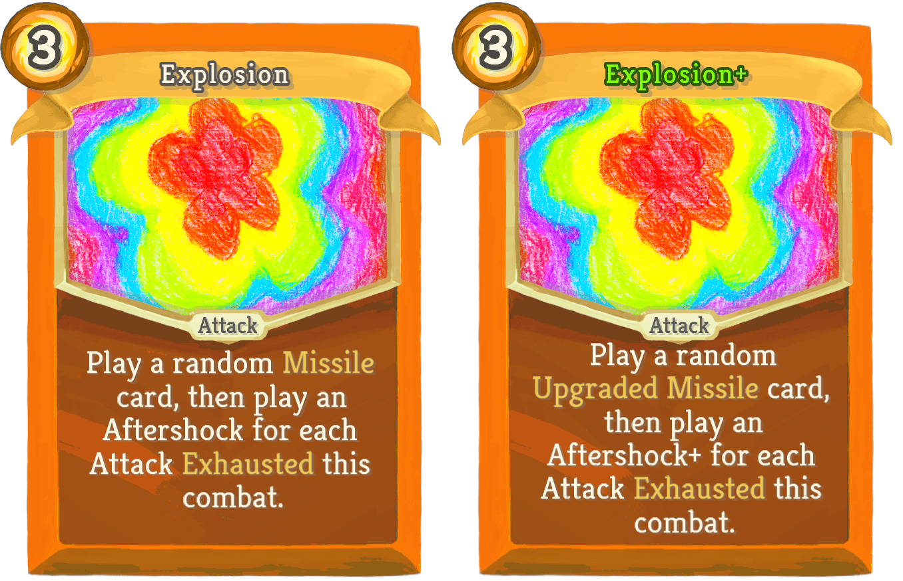 | Rare | Attack | 3 | Play a random (Upgraded) robotspaceexplorer:Missile card, then play an Aftershock (Aftershock+) for each Attack Exhausted this combat. |
| High Voltage | 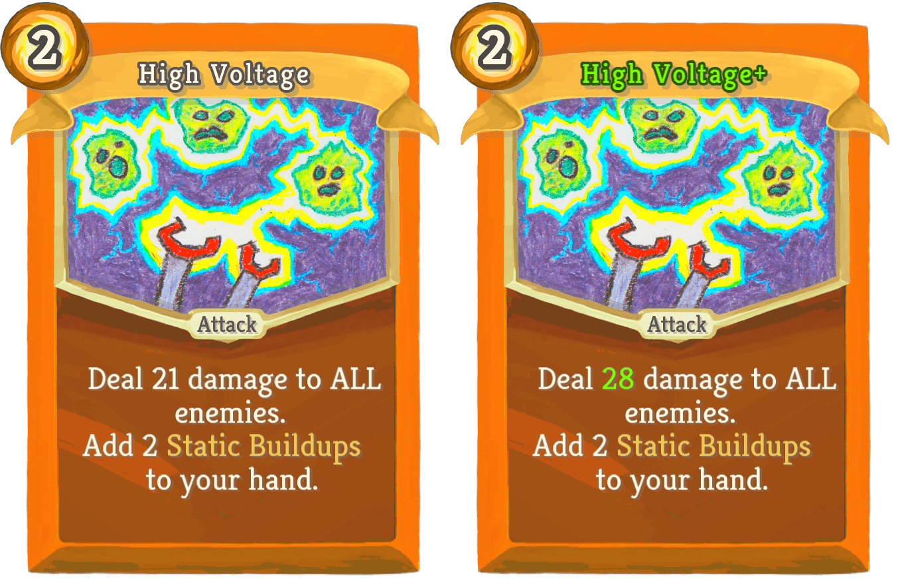 | Rare | Attack | 2 | Deal 21 (28) damage to ALL enemies. Add 2 Static Buildups to your hand. |
| Multitool | 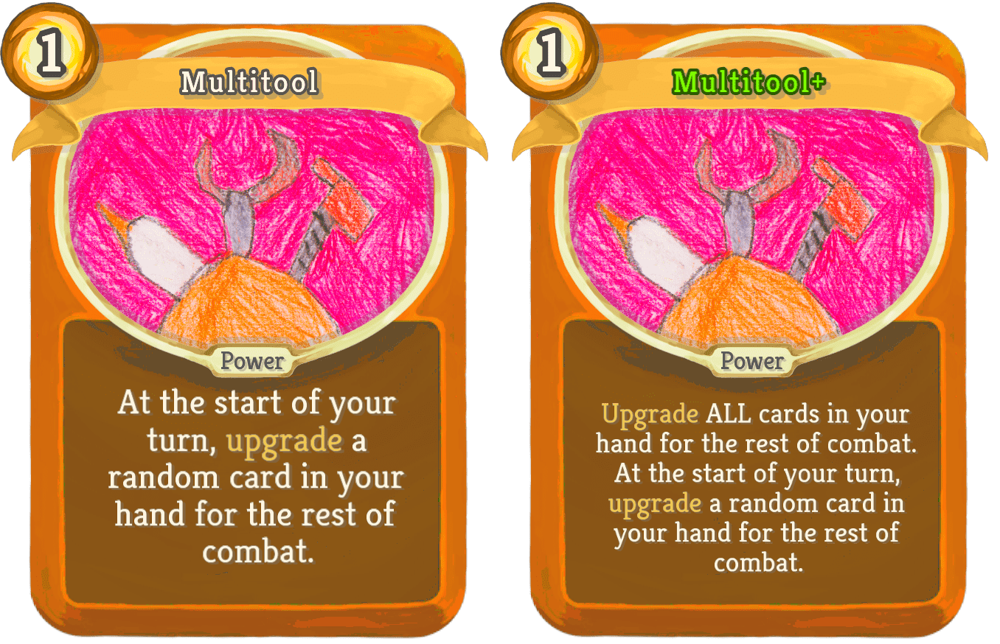 | Rare | Power | 1 | (Upgrade ALL cards in your hand for the rest of combat.)At the start of your turn, upgrade a random card in your hand for the rest of combat. |
| Scanner |  | Rare | Power | 1 (0) | Whenever you robotspaceexplorer:Salvage, prioritize higher rarity cards. |
| Shock Missile |  | Rare | Attack | 1 | Deal 7 (8) damage. Enemy loses 1 (2) Strength. Exhaust. |
| Trailblazer Form |  | Rare | Power | 3 | Ethereal. (not Ethereal.) At the start of your turn, gain 1 Artifact and 2 Plated Armor. |
| Wormhole | 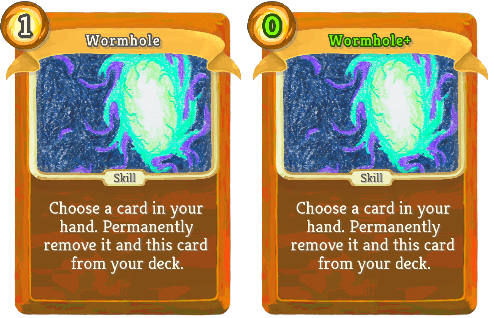 | Rare | Skill | 1 (0) | Choose a card in your hand. Permanently remove it and this card from your deck. |
| Name | Image | Tier | Pool | Description | Flavor |
|---|
| RoboCore |  | Starter | Robot_orange_color | At the start of each combat, gain 1 temporary Strength and draw 1 additional card. | Standard issue power drive that activates when danger is detected. |
| Clockwork Sextant | | Common | Robot_orange_color | At the start of your 2nd turn, gain 1Artifact. | "Was this ever used by sailors?" |
| Foglands Knife |  | Common | Robot_orange_color | Attacks that cost 0 deal 2 additional damage. | A small knife used by assassins that appears to have been discarded. |
| Bottled Gravity |  | Uncommon | Robot_orange_color | Choose a card. It costs 1 less [E] in combat. | The essence of pure gravity somehow makes the bottle feel lighter. |
| Plasma Hourglass |  | Uncommon | Robot_orange_color | At the start of your turn, gain 1SolarFlare. | A scientific marvel that swirls with pure plasma. |
| Ring of the Newt | | Rare | Robot_orange_color | Every 2 turns, draw 1 additional card. | An odd fossilized ring that appears to have been discarded. |
| Tough Plating | 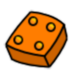 | Rare | Robot_orange_color | Whenever you Salvage, gain 2Block. | A strong exoskeleton useful for persevering while exploring the depths of space. |
| Reprocessor |  | Boss | Robot_orange_color | At the start of your turn, Salvage1. | This advanced device allows spacefarers to reuse valuable resources. |
| Search Specs |  | Boss | Robot_orange_color | The first time you Salvage each turn, gain [E] . | This fashionable accessory is widely used by robotic explorers. |
| TurboCore |  | Boss | Robot_orange_color | Replaces RoboCore. At the start of each combat, gain 2 temporary Strength, draw 2 additional cards, and gain 1 [E] . | Upgraded power drive that activates when danger is detected. |
| Slide Rule | 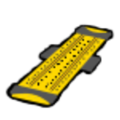 | Shop | Robot_orange_color | Whenever you shuffle your draw pile, play a random Attack from your Exhaust pile. | "Log base 10 of 800 is 2.903..." |
{kind=link}
{kind=link}
{kind=link}
{kind=link}
{kind=link}
{kind=link}
{kind=link}
{kind=link}
{kind=link}
{kind=link}
{kind=link}
{kind=link}
{kind=link}
{kind=link}
{kind=link}
{kind=link}
{kind=link}
{kind=link}
{kind=link}
{kind=link}
{kind=link}
{kind=link}
{kind=link}
{kind=link}
{kind=link}
{kind=link}
{kind=link}
{kind=link}
{kind=link}
{kind=link}
{kind=link}
{kind=link}
{kind=link}
{kind=link}
{kind=link}
{kind=link}
{kind=link}


{kind=link}